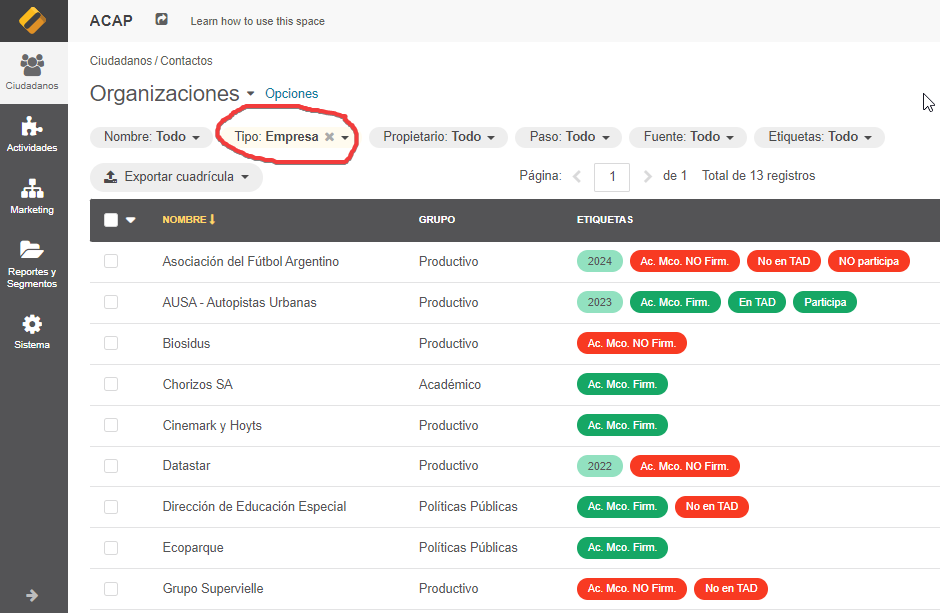
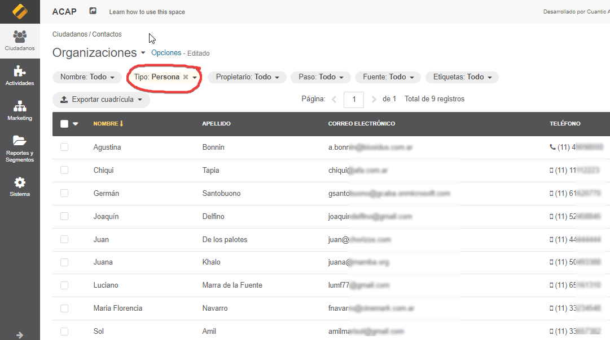
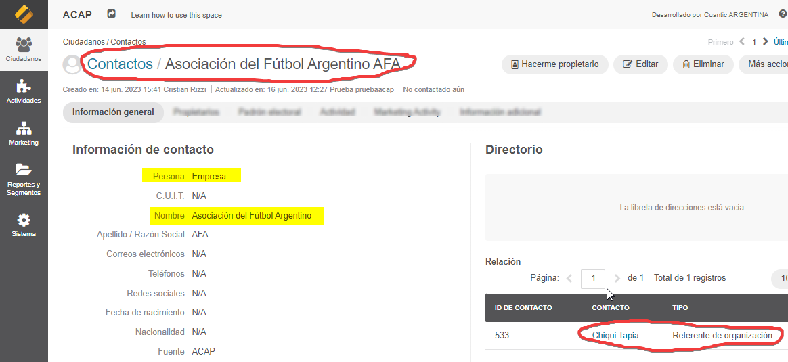

2 Contactos
En el lenguaje del CRM ACAP, tanto las organizaciones, como las personas con las que interactuamos, son considerados contactos. Dentro del CRM ACAP, las organizaciones son contactos de tipo empresa; mientras que las personas son contactos de tipo persona.
2.1 Organizaciones
Aquí debajo se puede ver un listado de organizaciones (contactos tipo empresa) en el CRM ACAP:

Fig.6: Listado de contactos tipo empresa
2.2 Personas
Y aquí debajo puede verse un listado de contactos tipo persona:

Fig.7: Listado de contactos tipo persona
Los contactos de tipo persona están relacionados con los contactos de tipo empresa. Por ejemplo, aquí debajo puede apreciarse cómo se ve en el CRM ACAP la relación entre una organización y un contacto:

Fig.8: Relación entre un contacto de tipo empresa y un contacto de tipo persona